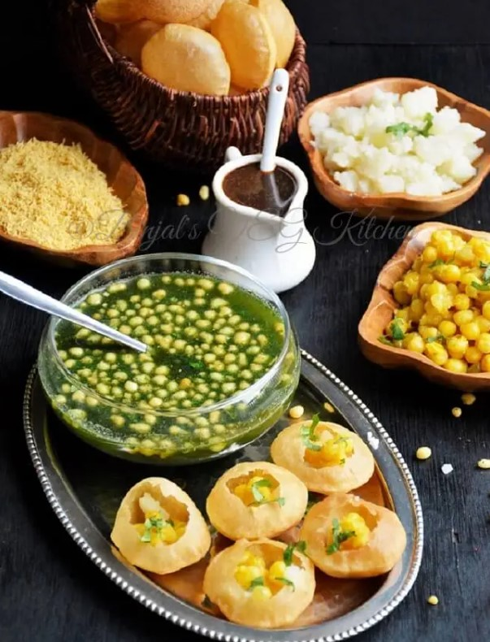

Generally, I'm an introvert who values exploration over expression. While I cherish moments of quiet introspection, I'm also deeply passionate about two things: dogs and the serene beauty of nature. I'm a caninophile, which means I have an abiding love for dogs, and I'm equally a naturephile, captivated by the breathtaking allure of the natural world. These passions bring joy and wonder to my life. In terms of technical interests, I have a strong passion for HTML and aspire to become a web developer. Lately, I've also been captivated by Markdown and am eager to explore it further through experimentation.
Panipuri, with its burst of flavors and crispiness, is undeniably my all-time favorite food. Pani puri is a very popular street food in India, The combination of flavors: Pani puri is a perfect blend of sweet, spicy, and tangy flavors. The puri is crispy and slightly sweet, the filling is savory and spicy, and the pani is tangy and refreshing.
Following are few sports that I recommend trying
| Sport | Reason to Try | Hours spent per week |
|---|---|---|
| Cycling | Cycling is an enjoyable way to stay fit and explore your surroundings. Whether you're cycling on scenic trails or through the city, it's a low-impact sport that offers cardiovascular benefits and builds leg strength. | 3-7 hours |
| Hiking | Hiking is an excellent way to connect with nature while staying active. It's suitable for all fitness levels, and it provides a sense of adventure and tranquility. | 2-5 hours |
| Swimming | Swimming is a low-impact exercise that works all major muscle groups. It's great for cardiovascular health, and it's a valuable life skill. | 4-8 hours |
| Rock Climbing | Rock climbing is a thrilling sport that challenges both physical and mental abilities. It builds strength, flexibility, and problem-solving skills while providing an adrenaline rush. | 4-6 hours |